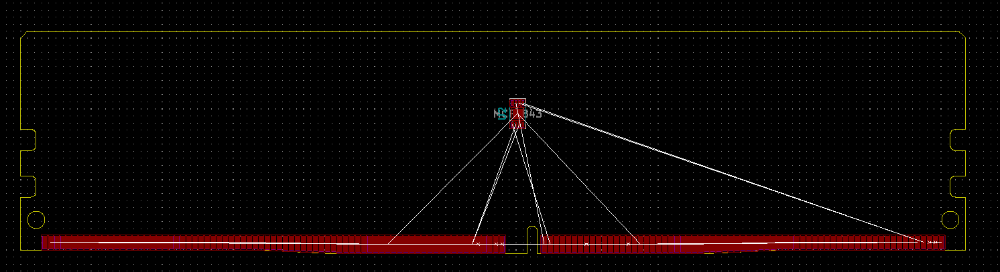

This project template is the base of create a board with DDR4 UDIMM pins github's repository .
This base project includes the PCB edge of UDIMM standar of the RAM Memory
The board outline looks like the following:

This project is open source.(c)2021 SoC-eame